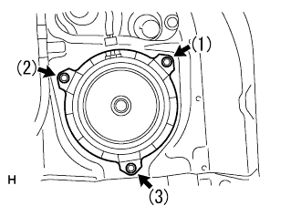
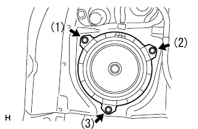

Speech Assisted RR installation |
| 1. Speech ASSY RR installation (mounting position LH) |
|  |
Attach the speaker ASSY RR LH with three bolts.
| 2. Deck trim side panel Assigned to LH |
 |
Match the clip and claws and attach the Detsu Rim Side Panel ASSY LH.
| 3. Speech ASSY RR installation (mounting position RH) |
|  |
Attach the speaker ASSY RR RH with three bolts.
| 4. Deck Trim Side Panel ASSY RH installation |
 |
Make the deck trim side panel ASSY RH by combining the clots and claws.
| 5. Quoter trim panel Assigned to FR RH |
| 6. Backdoor scuff plate installation |
 |
Combine the claw position on both ends, and attach the critpo to attach a squishy ascatif plate.
| 7. Backdoor with the strip installation |
| 8. Spair wheel cover ASSY installation |
| 9. Installation of the rear floor carpet |
| 10. Rear seat 3 point type belt Assy OUT LH installation (floor anka part) |
Tighten the rear seat 3 point type belt ASSY OUT LH (floor anka part) with bolts.
| 11. Rear seat 3 point type belt Assy Out RH installation (floor anka part) |
Tighten the rear seat 3 point type belt ASSY OUT RH (floor anka part) with bolts.
| 12. Rear seat cushion Assy installation (integrated rear seat) |
Rena seat cushion assemble the hook at the rear of the rear seat.
Pass the rear seat belt through the rear seat cushion cover and pad back rubber band.
 |
Rena seat cushion Assy The hook at the front of the front.
| 13. Rear seat cushion Assy installation (rear seat split can be used) |
Lock the front side of the rear seat cushion Assy is locked by the rear seat cushion lock striker.
Pass the rear seat belt through the rear seat cushion cover and pad back rubber band.
 |
At the bolt, attach the rear seat hinge LH.
Attach a snap ring to the rear seat back hinge RH.
The rear seat hinge RH is inserted into the corner pipe of the rear seat cushion Assy right bracket.
| 14. List of rear seat back Assisted (integrated rear seat integrated type) |
Attach the rear seat back associate with two bolts.
 |
Attach two clips.
| 15. Rear seat back Assembly LH installation (rear seat split can be split) |
Attach the rear seat back with two bolts.
 |
Attach two clips.
| 16. Rear seat back Assembly RH installation (rear seat split can be split) |
Attach the rear seat back with two bolts.
Attach two clips.
| 17. Front sheet otabelt assigned (floor anka part) |
In the bolt, attach the front seat Otabelt Assy RH floor anka.
| 18. Reardoor opening trimweather strip LH installation |
Combine the paint mark of the Weather Strip (yellow and white, one, one place) and the cut -out portion (arrow part) on the woethstritzy portion on the body side, and attach the rear door opening trimweather strip LH.

| 19. Front door opening trim Weather strip RH installation |
 |
Combine the paint mark of the Weather Strip (white, one place) and attach the front door opening trimweather stretup RH.
| 20. Deck side trim cover FR LH installation |
 |
Push the hook to the rear of the vehicle and attach the Detsuki side trim cover FR LH.
| 21. Front doorskuff plate LH installation |
 |
Insert the claws at the front door scuff plate LH front end.
Match the claws and clips and attach the front door skaf plate LH.
| 22. Front doorskuff plate RH installation |
 |
The claws at the front and rear ends are used.
Make the claws and attach the front door scuff plate RH.